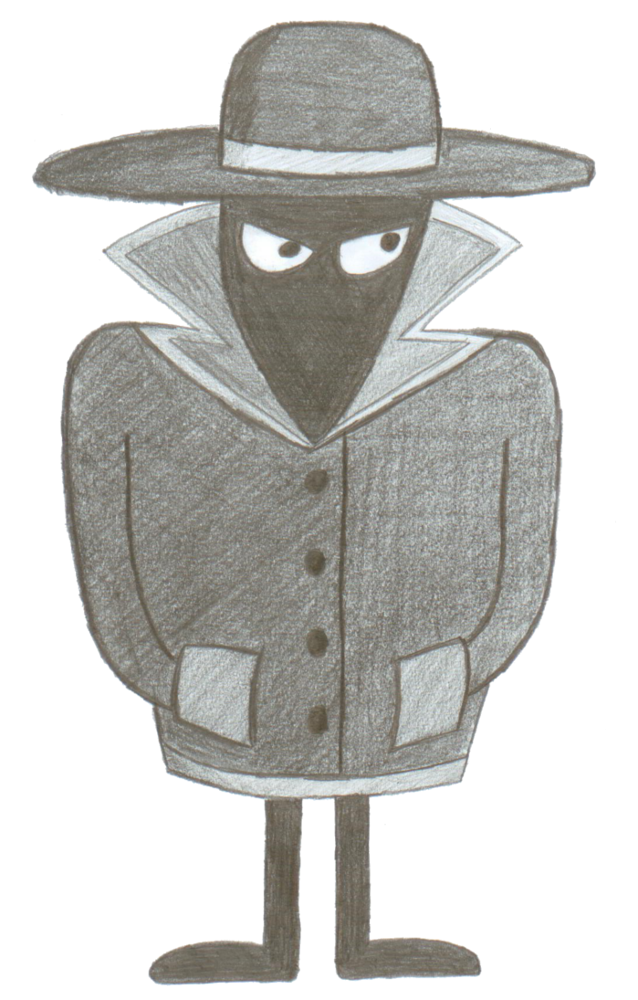

Enjoy!


EN | HU
| Watch The Trailer! | Download The Demo! | About Us |
|---|

I'm Barnabás Kocsis, project manager, developer and most of all programmer of the video game Undercover.
As a student and a gamer, the most educational thing was to start with a game, and as a Myst® fan, to create a world to explore, to interact with, to build an adventure game of my own.
Undercover is a game for Windows® and Android®. Graphically, it is entirely built using two-dimensional drawing technology, with a mainly top-down design, but with videos, subtitles and other additional elements for clarity and self-expression. Its genre can be classified as puzzle, skill, adventure. The player has to guide a character through "rooms" with obstacles and puzzles. The story is explained by subtitles, character indicators and audio. The main element of the game is the story, but there are also two other game modes linked by a menu system. The game is divided into smaller sections (Missions), based on a template, but each of which can contain new, individual rules. The game is in demo mode, but new elements are constantly being added to the story, gameplay and game engine.